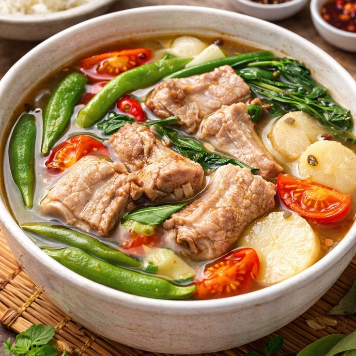
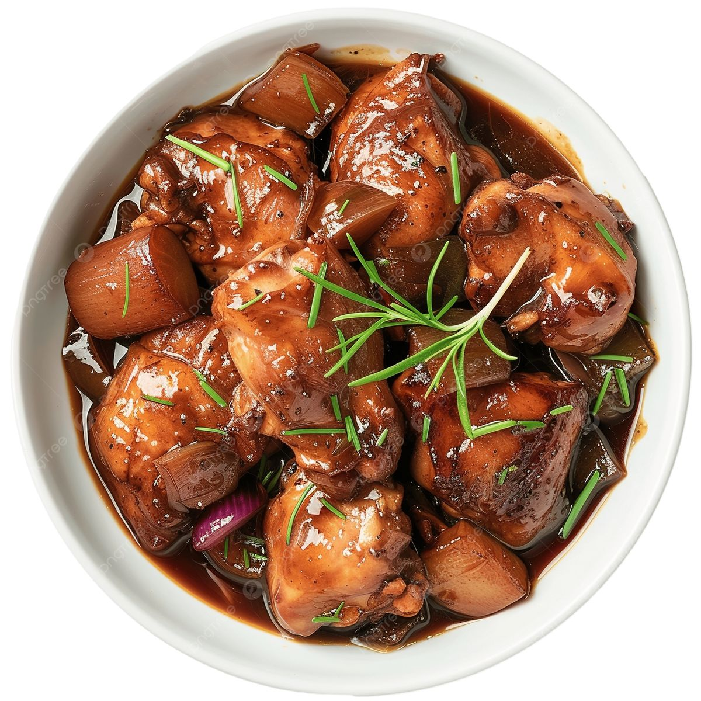
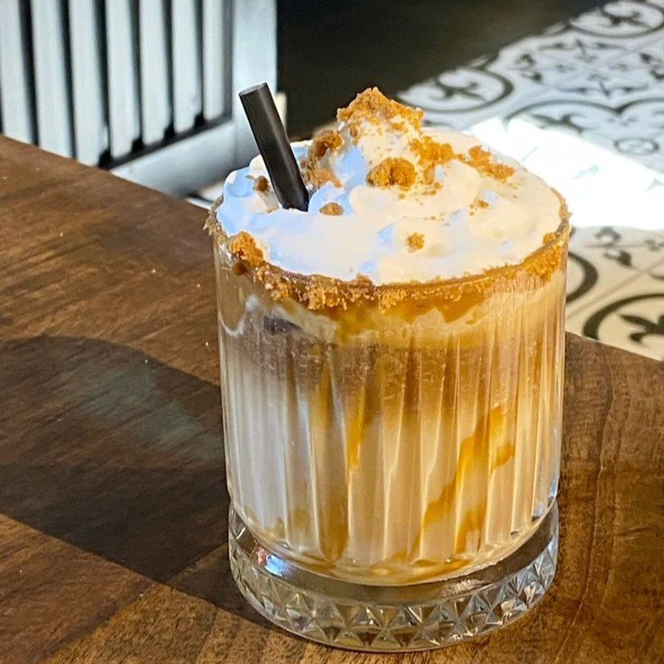
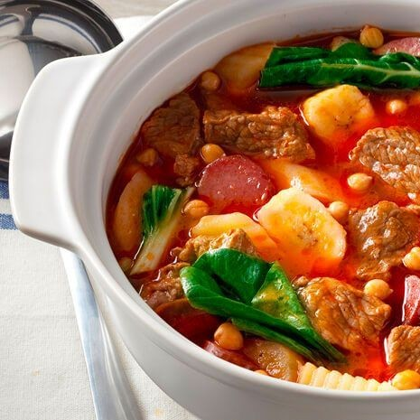
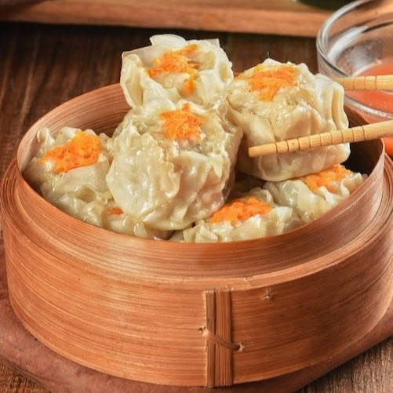
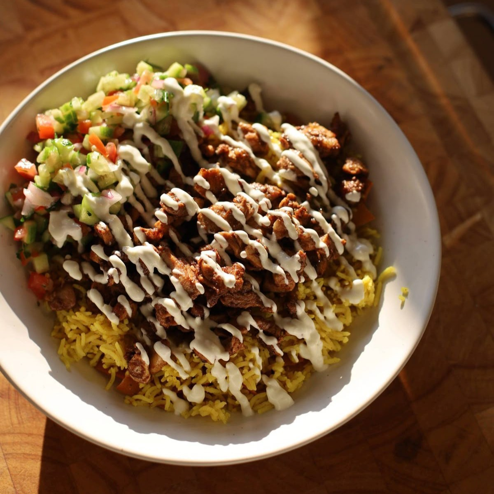
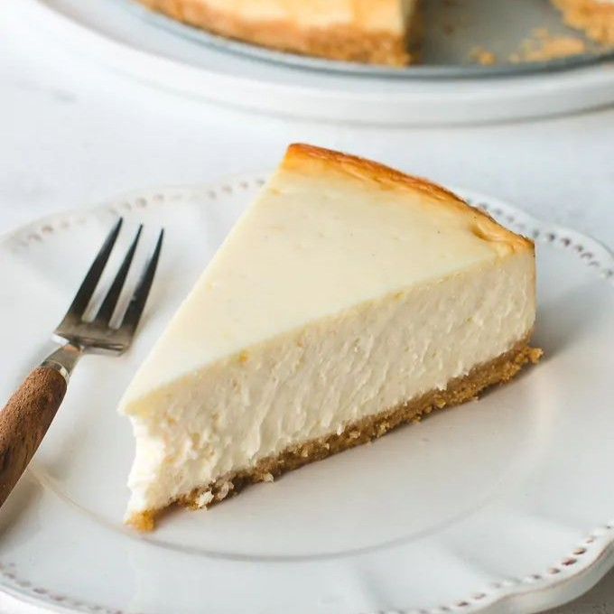
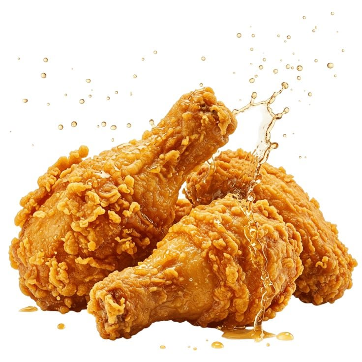
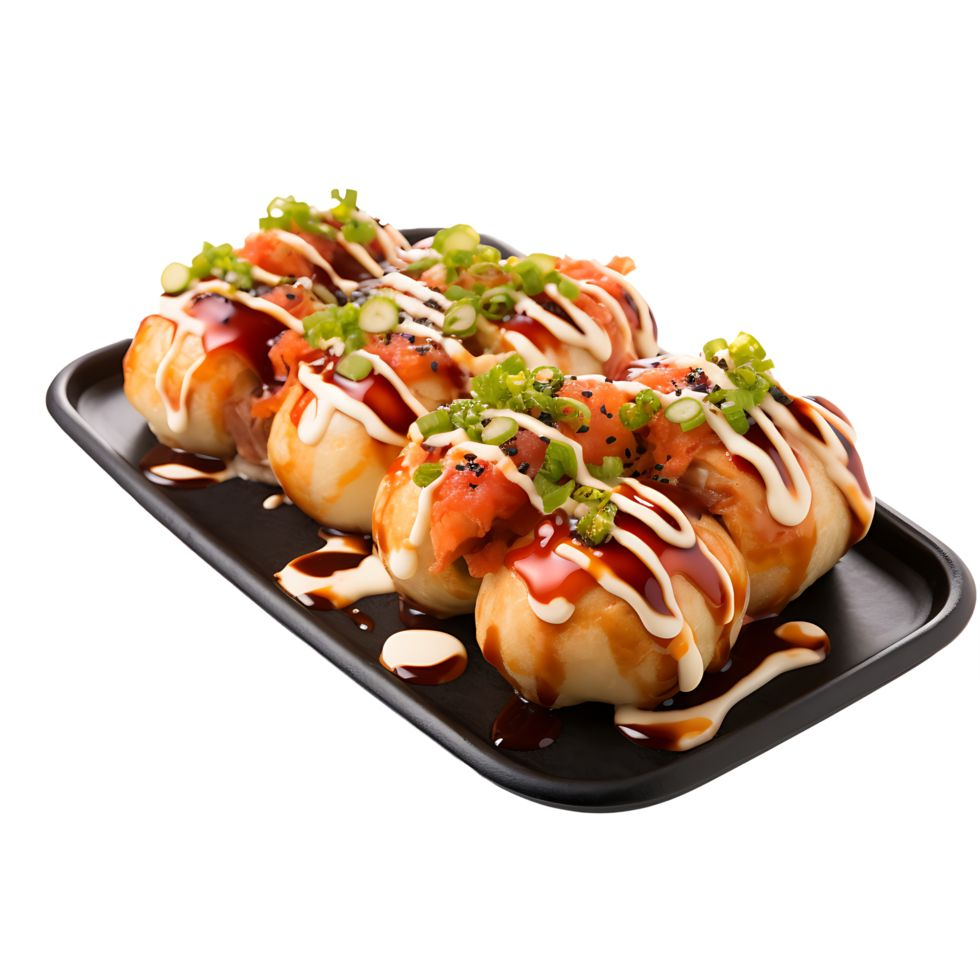

Top 1

Sinigang
A sour Filipino soup usually cooked with pork, vegetables, and tamarind.

A sour Filipino soup usually cooked with pork, vegetables, and tamarind.

A Filipino dish made of meat or fish cooked in a vinegar-based sauce.

A caffeine-free drink made with sea salt and steamed milk.

A Filipino stew made with vegetables and a flavorful broth.

A coffee drink made with espresso, steamed milk, and caramel syrup.

A Filipino dish consisting of steamed dumplings served with a savory sauce.

A Filipino dish consisting of rice topped with shawarma and a savory sauce.

A sweet dessert made with a creamy filling and a crumbly crust.

A Filipino dish consisting of crispy and juicy chicken served with a savory sauce.

A Japanese snack consisting of small balls of dough filled with ingredients and deep-fried.